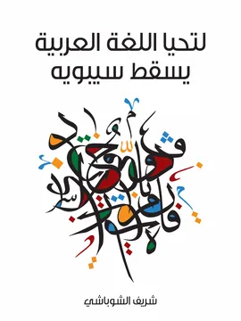

لتحيا اللغة العربية يسقط سيبويه

قراءة عربية أصلية محددة النطاق في الصفحات 9 إلى 14 من ملف PDF المرتبط، وليست تلخيصا كاملا للكتاب. نناقش ما تدعمه هذه المقاطع فقط.
قنبلة موقوتة في الثقافة المصرية
يروي الشوباشي في مقدمة الطبعة الثالثة أنه حين سلم النص النهائي للكتاب إلى المطابع في أبريل ٢٠٠٤ لم يكن يتخيل أنه يحمل بين يديه قنبلة موقوتة ستنفجر لتمزق ما تهيمن عليه الحياة الثقافية والفكرية في مصر منذ أكثر من ثلاثين عامًا؛ كان يتوقع أن تهب بعض الأقلام للدفاع عن لغة الضاد من منطلق الرفض المسبق لأي جديد، وأن يشهر دعاة الاستنارة أقلامهم ردًا لحجج الجمود والتحجر. لكن ما حدث جعله يعيد النظر في قناعاته عن توازنات الحياة الثقافية في مصر؛ فالضجة التي أثارها الكتاب تدل على واقع لا يمكن مجادلته: اعتراف الجميع، مؤيدين ومعارضين، بأن هناك مشكلة حقيقة تواجه اللغة العربية الآن. ويرد على الاتهامات: أنه يسعى إلى هدم اللغة العربية مع أن كل سطور الكتاب دفاع موضوعي عن الفصحى، وأنه يطالب بإلغاء النحو وهو اتهام مضحك فلا يمكن أن توجد لغة في العالم بغير قواعد تحكمها، حتى لغتا «الهوسا» في نيجيريا و«البمبرا» في مالي لهما قواعدهما، وما يطالب به هو تطوير النحو العربي وتيسيره.
زاوية وحدود القراءة
قراءة موجزة من ص ٩ إلى ص ١٤ من أصل ١٤٢ صفحة، تعرض مقدمة الطبعة الثالثة، لا الكتاب كاملًا.
الطبعة والقراءة
هذه النسخة من الكتاب صادرة ومتاحة مجانًا بموجب اتفاق قانوني بين مؤسسة هنداوي والسيد الأستاذ شريف الشوباشي.
تنزيل PDF المجاني ↓ القراءة والمصدر الرسمي ↗